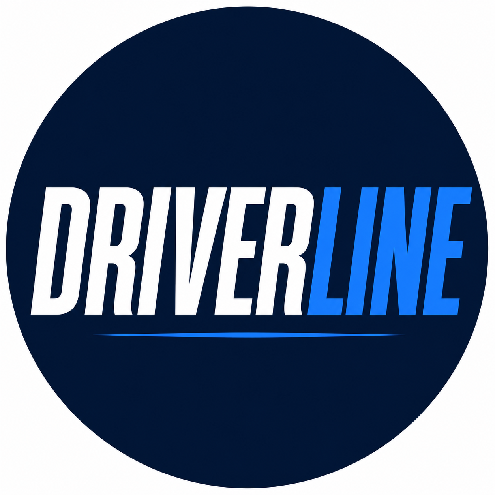

Driver Voice
What drivers see that the spreadsheet doesn't
Frontline experience can reveal where a process works, where it fails and where a small operational decision creates a much bigger problem on the road.
Coming in Edition 01 →
Working Conditions & Fair Treatment
DRIVERLINE starts with a simple idea: logistics works because people make it work.
Edition 01 will examine the pressures, decisions and working conditions that shape a driver's day, while asking what better practice could look like for drivers and managers.
Why DRIVERLINE exists →Frontline experience can reveal where a process works, where it fails and where a small operational decision creates a much bigger problem on the road.
Coming in Edition 01 →Advice is only useful if drivers can realistically apply it around routes, breaks, facilities and the pressures of the job.
Coming in Edition 01 →Good management coverage should explain operational pressures, challenge poor practice fairly and show what better management can look like.
Coming in Edition 01 →Workload, scheduling, safety, respect, training and technology all affect the person expected to complete the job. DRIVERLINE will examine those decisions from the driver's experience and the operational reality behind them.
Our editorial approach →Route planning, driver apps, telematics and AI can improve operations. DRIVERLINE will also ask what happens when they add work, fail or make the driver's day harder.
Training should go beyond handing somebody keys and a route. We will look at practical skills, development and the knowledge experienced drivers build on the job.
DRIVERLINE will challenge poor practice, but it will also recognise managers and organisations that listen, communicate and make practical improvements.
DRIVERLINE is an independent online magazine for professional drivers and logistics managers across the UK.
We cover driver voice, wellbeing, working conditions, safety, skills, technology and better logistics management. The aim is not to create a drivers-versus-management argument. It is to understand what happens on the frontline, why it happens and what could realistically be done better.
“DRIVERLINE is about the people behind logistics, not just the vehicles, fleets and technology.”
See an interesting headline, tap once and go directly to the article. No app to install and no account required to read DRIVERLINE on the web.